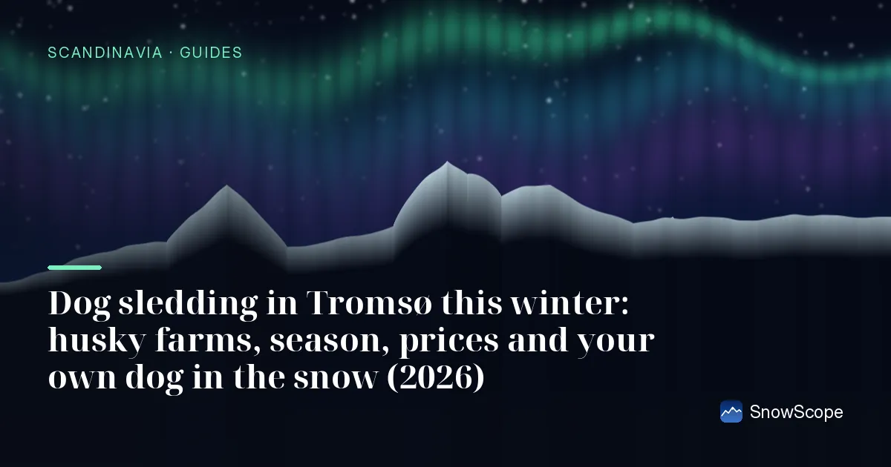

Dog sledding in Tromsø this winter: husky farms, season, prices and your own dog in the snow (2026)
Husky sledding on the outskirts of Tromsø runs from mid-November through spring, as long as enough snow sits on the ground. By 13 November the town itself was barely white—only 6 cm at the weather station—but the mountains were ready: Gjerdvassbu at 710 m had 44 cm, enough for the sleds to roll.
See the live snow forecast for Scandinavia in the SnowScope appSnow depth, powder alerts and the 3D map, free.

Where to sled: farms outside town have more snow
The best sledding happens where the snow lies deeper and steadier. Most operators work from Kvaløya to the west or in the valleys inland, away from town traffic and urban slush.
Tromsø Villmarkssenter on Kvaløya runs daily sleds from 15 November to 30 April 2027. A ride lasts about 45 minutes in a shared sled with a guide, nested in a four-hour trip with transport, for 3390 NOK per adult. The farm keeps over 300 Alaskan huskies and runs a café. Best Arctic at Breivikeidet offers a morning tour of five hours for 2990 NOK. Active Tromsø also on Kvaløya runs full-day trips of about seven hours from November to March.
November to January: darkness arrives before the thaw
The sun sets for the season in late November and does not return until mid-January. Visit Tromsø marks the polar night as running roughly from 27 November to 15 January. This does not mean total darkness at midday: a blue twilight lasts a few hours, and many farms run tours in it.
Book for early November if you want any real daylight. After month's end, bring a headlamp, expect dim light, and plan your trip around the farm's schedule. Many sledding tours happen in the twilight, which is part of the Arctic experience.
Dressing right for the sled and the wind
A moving sled creates wind chill that makes even mild minus temperatures feel harsh. You are standing or sitting still, exposed, so dress more warmly than you would for active movement. Layers work better than one thick coat, and cover your face, hands and feet.
The farms know this and usually advise what to wear; ask when you book. Bring a headlamp even on daytime rides, because the light fades fast and many routes pass through forest.
Walking your own dog in winter Tromsø
Norway's national leash rule runs from 1 April to 20 August, but Tromsø sets its own year-round rules. Dogs must be leashed in built-up areas, in the town centre, on sports grounds and on lit ski trails. All of Tromsø—both the mainland and Kvaløya—is reindeer grazing land all year, and the municipality reminds residents to keep dogs close and leashed when reindeer may be near.
If your dog needs to run loose, use the fenced dog parks at Kronen or Charlottenlund. On groomed ski trails, walk beside the track, not in it, and pick up waste. In deep winter cold, short-haired dogs should wear a coat.
Snow depth and what it means for travel
Early November snow in Tromsø is real but not deep. The 44 cm in the mountains on 13 November is enough to ski or sled, but rocks may still sit close to the surface on steep slopes. As winter advances and fresh snow builds, the base hardens and deepens.
Check with the farm or trail operator about snow depth on your chosen route before you go. The difference between town and mountains is big: low ground often has less snow and more slush, while higher valleys stay colder and hold snow better.
Tips for skiers
- Choose early November for sledding if daylight matters to you; after 27 November the sun is gone until mid-January and all rides happen in twilight or darkness.
- Dress warmer than you think you need; a moving sled creates wind chill that bites harder than standing still.
- Book with a farm on Kvaløya or in the valleys—they have more snow and better conditions than town ground.
- Leash your dog on lit trails and in town year-round, and keep it away from reindeer, which graze across Tromsø all winter.
- For off-piste trips, check the latest official avalanche bulletin from Norway's avalanche warning service before you go.
About these numbers
Resort snow depths are the deepest snow on the resort's upper slopes on the date shown; they are estimates for an area, not a measurement at one point. Forecasts can change. Always read the official avalanche bulletin before going off-piste.
Cite this report
For research, teaching or the press: the numbers and charts are free to reuse under CC BY 4.0 with this citation.
SnowScope (2026), Dog sledding in Tromsø this winter: husky farms, season, prices and your own dog in the snow (2026), https://snowscope.app/blog/en/2026/11/tromso-dog-sledding-husky-farms-winter-guide-2026.html, accessed 2026-11-14
SnowScope (Atlas Labs). (2026, November 14). Dog sledding in Tromsø this winter: husky farms, season, prices and your own dog in the snow (2026). SnowScope snow reports. https://snowscope.app/blog/en/2026/11/tromso-dog-sledding-husky-farms-winter-guide-2026.html
BibTeX
@misc{snowscope2026tromsodogsleddinghuskyfa,
author = {{SnowScope (Atlas Labs)}},
title = {Dog sledding in Tromsø this winter: husky farms, season, prices and your own dog in the snow (2026)},
year = {2026},
month = nov,
howpublished = {\url{https://snowscope.app/blog/en/2026/11/tromso-dog-sledding-husky-farms-winter-guide-2026.html}},
note = {Published 2026-11-14 14:19 UTC; accessed 2026-11-14}
}· CC BY 4.0 · Methods, data and tools →
Follow Scandinavia
Free: a message when fresh snow is coming, and the forecast every morning.
More snow reports

Sälen station near Kläppen measured 45 cm on 13 November after one night of heavy snow. Rain and mild air arrive this week. Data from 13 November 2026.

Idre Fjäll's December snow odds improve sharply after mid-month. On 13 November, the typical mid-mountain depth on 15 December is 32 cm.

Himos opens a prepared cross-country loop on 14 November as natural snow remains absent from the forest floor around this Finnish resort.